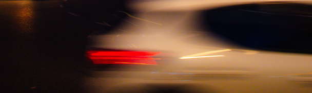

Accésibilité & identité visuelle de My Delhaize plus efficace
Analyse des avis clients disponible sur le web afin d'itérer sur l'app. mobile. Itération sur 3 axes : Accésibilité/identité visuelle, recherche d'un produit, aperçu de la livraison.
Accésibilité & identité visuelle de My Delhaize plus efficace
Analyse des avis clients disponible sur le web afin d'itérer sur l'app. mobile. Itération sur 3 axes : Accésibilité/identité visuelle, recherche d'un produit, aperçu de la livraison.
Création d'une landing page originale pour un restaurant
Projet fictif, le projet porte essentiellement sur l'UI design afin d'y créer une landing page avec une atmosphère appétissante. Création également d'un logo dans Adobe Illustrator.
Optimisation d'une plateforme d'apprentissage
Projet scolaire en groupe. Optimisation de l'UX ainsi que l'UI d'une application mobile déjà existante "itslearing" afin de rendre celle-ci plus attrayante pour les utilisateurs.
Application mobile pour vous motiver à pratiquer un hobby
Projet fictif d'une application mobile permettant de gérer son temps afin de pratiquer un/des hobby(ies). L'idée est de motiver les personnes afin de pratiquer une activée sur le long terme.

Itération de l'UX et de l'UI d'un site internet d'offres de stages
Projet scolaire afin de proposer une refonte d'UX et d'UI Design pour un site internet (tout en gardant la structure de base du site internet) de recherche de stage déjà existant, StageFacile.

App. mobile de vente de livres afin de concurrencer ce marché
Projet scolaire fictif. Audit de différents sites internet de vente de livres, recherche UX afin d'y proposer une application mobile attrayante et percutante dans l'achats de livres en tout genre.
Identité visuelle pour du rhum jamaïcain Adobe Illustrator
Projet scolaire fictif. Recherche, inspiration, croquis et réalisation d'un logo dans Adobe Illustrator.
Quelques projets créés avec Adobe Photoshop
Créations de quelques affiches, une majeure partie de ces affiches ont été créées dans Photoshop.

Quelques projets créés avec Adobe Illustrator
Créations de quelques affiches, une majeure partie de ces affiches ont été créées dans Illustrator.

Mes photographies
Mes plus beaux clichés réalisés avec mon Canon 1300D
